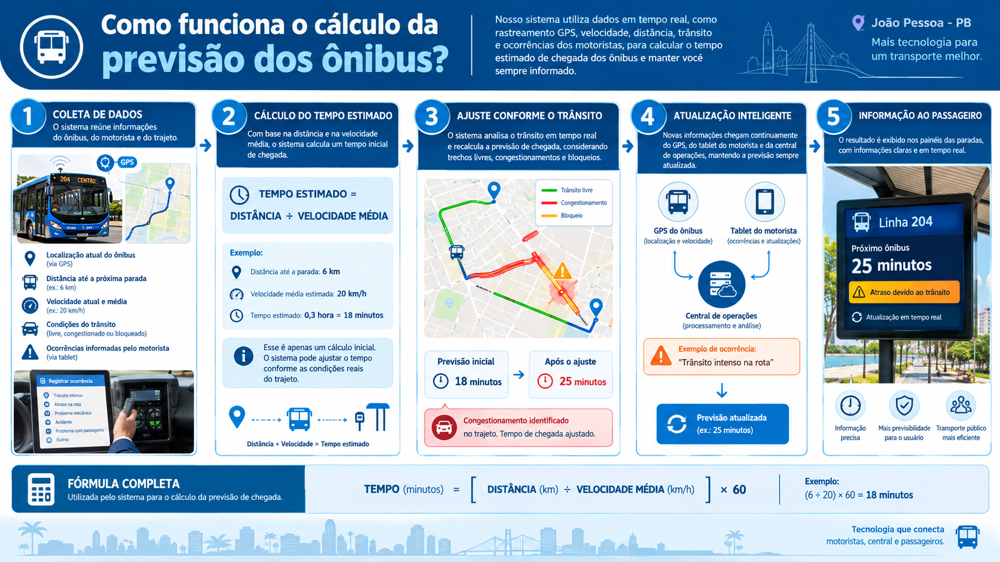

Este projeto tem como objetivo melhorar a comunicação com a população e a qualidade do transporte público, por meio da implementação de um sistema próprio para acompanhar a situação dos ônibus em tempo real. A proposta inclui:
Tecnologia nos ônibus

Instalação de painéis informativos nas paradas de ônibus

Métodos de cálculo
